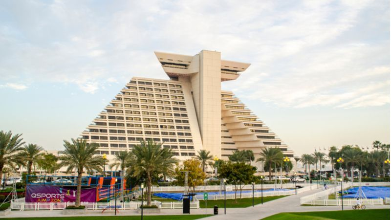

منتجع جزيرة البنانا الدوحة بإدارة أنانتارا
يتميز منتجع جزيرة البنانا بشاطئ ذهبي خاص بطول ٨٠٠ متر وسبا أنانتارا وخيارات لتناول الطعام في ٩ مطاعم ومسبح اللاجون. إنه على بعد ٢٠ دقيقة عن طريق ركوب العبارة من الدوحة إلى الجزيرة، حيث يمكن للضيوف الاستمتاع بإطلالة على بحر العرب، والاستمتاع بالتصاميم العربية في كل غرفة ومشاهدة فيلم في السينما. كما تم تجهيز كل غرفة في منتجع الدوحة بجهاز تلفزيون بشاشة مسطحة ومنطقة جلوس في الهواء الطلق وميني بار. غرفة معيشة كبيرة وحمامات بطراز توقيع أنانتارا وأحواض استحمام ودش.
منتجع ريتز كارلتون

يمكن للسياح الاستمتاع بأفضل سبا ومركز اللياقة البدنية الحديثة وبارات ومطاعم فاخرة في منتجع ريتز كارلتون الذي يقع على شواطئ بحر العرب. ويحتوي المنتجع أيضًا على مسبح داخلي وخارجي بالإضافة إلى حدائق خضراء مورقة. كما يمكن للضيوف الاستمتاع بإطلالة مثالية على شبه جزيرة قطر وناطحات الدوحة. تتميز الغرف والأجنحة ذات الطراز المعاصر بأقمشة فاخرة وقطع خطية مذهلة تزين الجدران. ولا شك أن الناس سيستمتعون بالمطبخ المفتوح في مطعم لاجون، بما في ذلك بوفيه الطعام ومزيج من النكهات العربية والشرق الأقصى. بالإضافة إلى تناول أشهى الأطعمة، يمكن للناس الاستمتاع بإطلالة بانورامية على البحر بجانب المسبح. حيث يجب على السياح أيضًا أن يقدموا ذوقهم لأفضل شرائح اللحم في مطاعم الفنادق ذات المستوى العالمي مثل س. ت. ك. الدوحة وفلامينغوز و Habanos و اللاجون وسيل وميل براسيري فرنسي. يعد شرب الشاي في غرفة جلوس الردهة جنبًا إلى جنب مع مزيج المأكولات الآسيوية المسرحية طريقة مثالية لقضاء فترة ما بعد الظهيرة. سيقوم السياح بتجربة مزيج من البحر والصحراء في مركز السبا في ريتز كارلتون، أحد أفضل المنتجعات في الدوحة. ألا تبدو لك وكأنها عطلة الأحلام النهائية؟
منتجع المسيلة
يمكن للناس الاستمتاع بالمطاعم والبارات ومواقف السيارات الخاصة المجانية ومسبح مع جاكوزي ومركز للياقة البدنية في منتجع المسيلة، منتجع وسبا فاخر، الدوحة وهذه هي بعض من وسائل الراحة التي يقدم المنتجع لضيوفه. كما يوفر المنتجع أيضًا خدمة الواي فاي المجانية وبارًا وحديقة مع مكتب استقبال يعمل على مدار الساعة وخدمة الغرف وتحويل العملات للضيوف. وتحتوي الغرف على تكييف الهواء وتلفزيون بشاشة مسطحة مع قنوات فضائية وغلاية وبيديه ومجفف شعر ومنضدة وما إلى ذلك.
منتجع ومركز اجتماعات شيراتون جراند الدوحة
يقع منتجع الدوحة الشامل تمامًا في وسط الدوحة، ويوفر إمكانية الوصول إلى شاطئ خاص وأكثر من ٧ مطاعم ومسابح تطل على الخليج العربي. تحتوي الغرف على شرفة مع إطلالة خلابة على البحر وناطحات المدينة. الإضاءة الطبيعية من خلال النوافذ الممتدة من الأرض إلى السقف هي شيء يمكن للمرء الاستمتاع به أثناء تناول فنجان من الشاي أو القهوة. تشمل بعض وسائل الراحة التي توفرها الغرف جهاز تلفزيون بشاشة مسطحة مع قنوات فضائية ومكتب. تقدم المطاعم المتوفرة في المنتجع المأكولات الشرق الأوسطية والإيطالية والآسيوية مع تناول الطعام على شاطئ البحر. ومن الأشياء التي يمكنك القيام بها في قطر هو الاستمتاع بالعديد من المرافق الترفيهية والترويحية مثل ملاعب التنس وملاعب الاسكواش وصالة الألعاب الرياضية التي تتميز بأحدث المعدات.
منتجع وسبا الشرق، فندق ريتز كارلتون
يوفر هذا المنتجع الفخم على واجهة الشاطئ من خليج الدوحة إطلالة خلابة للسائحين. وإن الغرف في المنتجع تمتزج العمارة العربية واللمسات التقليدية مع أحدث وسائل الراحة الحديثة. الديكور الشرقي والزخارف الخشبية والأسرة المغطاة هي بعض من ميزات الغرف مع شرفة خاصة. يتم تقديم علاجات الجلد والتدليك في المنتجع الصحي الذي تبلغ مساحته ٦٥٠٠ مترًا. يمكن للسياح الاسترخاء على كراسي الاستلقاء أو الاستمتاع بالساونا. كما يمكن للأطفال الاستفادة من المسبح المظلل والحديقة والأنشطة في نادي Ritz Kids. يتم تقديم المرطبات والوجبات الخفيفة في مطعم السيف بجانب المسبح، ويمكن لبعض السياح الاستمتاع بالمأكولات الفارسية المعاصرة في مطعم فارسي أنيق مطل على خليج الدوحة. سيحظى الناس بأفضل تجربة تناول طعام مع بيئتها الأنيقة والعصرية. يتم تقديم مجموعة متنوعة من البوفيهات، من المأكولات اللبنانية إلى المأكولات البحرية حتى خيارات الغداء المتأخر في مطعم الليوان.